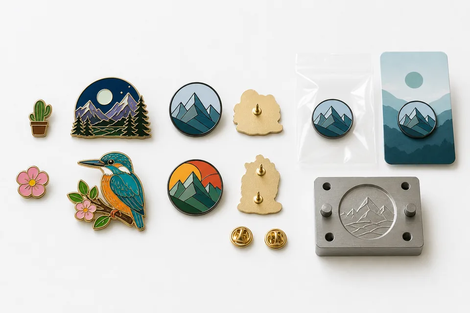

“How much do custom enamel pins cost?” is a reasonable question, but a useful answer cannot come from size alone. A pin is made to order. The factory must translate artwork into tooling, form the metal, polish it, plate it, fill or apply color, attach the backing, inspect the product and pack the order. Changing one variable can alter several production steps.
This guide explains how a factory builds a quotation for custom metal pins and enamel badges. It deliberately avoids publishing a universal price table because metal markets, exchange rates, freight and specifications change. More importantly, a low table price may omit tooling, extra colors, upgraded backings, packaging or shipping. The best buying decision comes from comparing complete quotations based on one approved specification.
Why custom enamel pins do not have one fixed price
A stock pin has already been designed, tooled and produced. A custom pin begins with your artwork and may never be repeated for another buyer. The first order carries one-time preparation and tooling work, while the unit cost reflects the production quantity and selected operations. That is why 100 pieces of one design cannot be priced by simply dividing the price of 1,000 pieces.
Two pins with the same outside dimensions may have different costs. One could be a simple round soft-enamel pin with two colors and a butterfly clutch. The other could have a custom outline, internal cutouts, six hard-enamel colors, black nickel plating, two posts and printed backing cards. They occupy similar space but require different tooling, polishing, color filling, assembly and inspection.
Freight also matters. A small pin is light, but presentation boxes and individual cards add volume. Air express cost depends on chargeable weight and destination. Import taxes and delivery terms may be outside the product quotation. Ask whether a quote is ex-works, includes freight or includes duties before comparing totals.
The main custom enamel pin cost factors
| Cost factor | Why it matters | How to control it |
|---|---|---|
| Size | Changes metal use, enamel area, weight and packing | Use the smallest size that keeps artwork readable |
| Quantity | Spreads setup and handling over more units | Combine demand for one design where practical |
| Process | Soft enamel, hard enamel, die struck and printing require different operations | Select based on product goal, not trend alone |
| Colors | More color areas add filling and inspection work | Remove decorative colors that do not support recognition |
| Shape and cutouts | Complex geometry affects tooling and finishing | Simplify hidden or very small openings |
| Plating | Standard, antique, special and two-tone finishes differ in processing | Choose one finish unless two-tone adds clear value |
| Backing and packing | Upgraded attachments and retail presentation add components and labor | Match packaging to the actual sales channel |
Size and thickness
As dimensions increase, a pin normally uses more base metal and enamel and weighs more in shipping. A larger face may also need two posts to prevent rotation. Greater thickness can support deep relief, but it adds material and weight. Use the badge size and thickness guide to choose a format that protects detail without paying for unnecessary mass.
Custom shapes are typically evaluated by their longest dimension. Include projecting points and loops. If a supplier quotes only the decorative center and another quotes the full outline, their nominal size categories may not be comparable.
Artwork complexity and cutouts
Fine lines, many isolated enamel cells, irregular outlines and openings can increase tooling or hand-finishing requirements. Some complexity also raises rejection risk because each narrow section must form, plate and fill correctly. Simplifying a tiny cutout can improve both price and reliability without changing how the design is perceived at normal viewing size.
Three-dimensional sculpting often needs more artwork preparation and more complex tooling than a flat two-level design. If the 3D effect is essential, budget for it. If the design only needs visual depth, raised metal, recessed texture and antique plating may achieve the goal more efficiently.

Base metal
Zinc alloy, brass and iron support different forming processes and design styles. Zinc alloy is useful for complex cast shapes and deep relief. Brass offers a solid stamped character and crisp metal detail. Iron can be efficient for many standard enamel pin designs. Material selection should follow the artwork; choosing a cheaper metal that forces extra operations may not reduce the finished cost.
Read our zinc alloy versus brass comparison for a more detailed process explanation. When requesting a quote, you can ask the factory to recommend the most suitable base metal instead of specifying one without understanding the production route.
Soft enamel versus hard enamel pricing
Soft enamel leaves color recessed below raised metal lines. It provides tactile detail and is often a cost-efficient choice for promotional pins, events and retail collections. Hard enamel fills color to the metal level and is polished smooth, creating a premium jewelry-like surface. The additional filling and grinding process can influence cost and lead time.
That does not mean hard enamel is always the expensive choice in every quotation. Size, color count, plating, order quantity and supplier process all contribute. Compare the two on identical artwork and specifications. If a buyer values raised texture and strong contrast, soft enamel may actually be the preferred product rather than merely a lower-cost substitute.
Printed pins are another option when the artwork includes gradients, photographs or detail too small for enamel. Printing changes the look and may require a protective coating. It should be chosen because it solves an artwork problem, not because it is assumed to be cheaper without a design review.
Color count and color boundaries
Each enamel color must be prepared, filled and checked. More colors and more separate cells generally increase work. A pin with three colors in large areas is easier to control than a pin with the same colors repeated across dozens of tiny spaces. Color count is therefore only a rough indicator; distribution and cell size also matter.
Use color intentionally. Keep colors that communicate the logo and remove decorative shades that disappear at actual size. If multiple designs share the same mold but change color, ask whether the supplier can quote color variants and how quantities must be divided.
How quantity and MOQ affect unit cost
Production includes fixed work such as artwork preparation, tooling setup, color preparation and machine adjustment. Larger quantities spread that work over more units, so the unit price generally decreases at quantity breaks. However, ordering far beyond realistic demand can create storage cost and obsolete inventory. The best quantity balances unit economics with sales or distribution plans.
BadgeCraft Metalworks typically starts at 100 pieces per design, subject to process. The minimum may change for unusual dimensions, finishes, packaging or material requirements. When comparing quotes, request several realistic quantity tiers such as 100, 300, 500 and 1,000 pieces. This reveals where unit cost changes enough to justify a larger order.
Do not combine different designs and assume they count as one production quantity. Each design normally needs its own artwork, tooling and setup. Color variants may be easier to combine than completely different shapes, but the quotation should state how the factory has allocated setup and quantity.
Mold fees, artwork and sample cost
The mold or die converts approved artwork into a production tool. Its cost depends on dimensions, forming process, relief, number of sides and complexity. A two-sided coin mold is different from a simple one-sided pin die. Edge lettering, cutouts or 3D sculpting can require additional preparation.
Ask whether tooling is a one-time fee, how long it is retained and whether a repeat order using unchanged artwork avoids a new tooling charge. Also ask what happens when the design changes. Even a small size or outline change may require new tooling, while a color-only update may not.
A physical sample verifies shape, dimensions, plating, color, attachment and finish before bulk production. Our normal planning time is about seven days for sampling and about 15 days for bulk production after approval, although complexity can change this. Sample cost and shipping may be quoted separately. Skipping a sample can save time upfront but increases risk when color, relief or weight is important.
Backing, attachment and packaging cost
Butterfly clutches are common and efficient. Rubber clutches offer color and a softer feel. Locking backs provide stronger retention. Magnets avoid puncturing garments. Larger pins may need two posts. Each choice changes component cost and assembly, but the correct attachment protects the product's usefulness. Saving a small amount on a weak backing can create a larger customer-service problem.
Packaging ranges from an individual polybag to a printed backing card, velvet pouch or rigid presentation box. Retail products may need barcode placement, hang holes and protective spacing. Corporate giveaways may only require clean individual bags. Medals and coins often benefit from boxes, but pins distributed at an event may not.
Provide packaging dimensions, artwork and sorting instructions before the final quote. If cards are printed separately after pin production, lead time and color approval need to be coordinated. Freight should be estimated using the complete packed product rather than bare pin weight.
How to control cost without lowering quality
- Choose a purposeful size. Make the pin large enough for clarity but not larger only to appear valuable.
- Simplify invisible detail. Remove lines, gaps and text that cannot be appreciated at actual size.
- Use fewer meaningful colors. Preserve brand recognition while reducing tiny enamel cells.
- Select one practical plating finish. Reserve two-tone or special finishes for designs that benefit from them.
- Use a standard backing where appropriate. Upgrade only when wear or security requires it.
- Match packaging to distribution. Do not buy retail boxes for pins that will be handed out loose at an event.
- Provide clean artwork. Clear vector files reduce redraw and revision cycles.
- Plan repeat demand. Keep tooling information and approved samples for reorders.
What to include in a custom pin quote request
A complete inquiry allows the supplier to answer quickly and reduces later price changes. Send:
- Vector PDF, AI or layered PSD artwork, or the highest-resolution file available.
- Target width and height, measured across the full custom outline.
- Quantity per design and any color variants.
- Soft enamel, hard enamel, die struck or a request for process recommendation.
- Plating preference and surface texture.
- Backing type and post count.
- Individual packing, backing cards, boxes and sorting requirements.
- Destination country, delivery deadline and preferred shipping terms.
If some details are undecided, explain the intended use and budget priority. For example: “This is a retail pin where smooth finish matters,” or “This is an event giveaway where color and delivery date matter most.” A manufacturer can then recommend options rather than guessing.
Frequently asked questions
How much do custom enamel pins cost?
There is no responsible universal price without artwork and specification. Size, quantity, material, process, colors, plating, backing, packaging, tooling and freight all contribute. Request a written itemized quote for your design.
Why is there a mold fee?
The mold or die transfers approved custom artwork into metal. It is specific to dimensions, shape and relief. Ask how repeat orders and design changes are handled.
What is the typical minimum order?
Our typical starting MOQ is 100 pieces per design, subject to process. Unusual finishes, sizes or packaging may change the minimum.
How long does a custom pin order take?
Planning references are about seven days for a sample and about 15 days for bulk production after approval. Artwork revisions, complex processes, packaging and freight affect the total calendar.
Get a quote based on your actual design.
Send artwork, size, quantity, finish, backing, packaging and destination. We will review the specification before pricing.